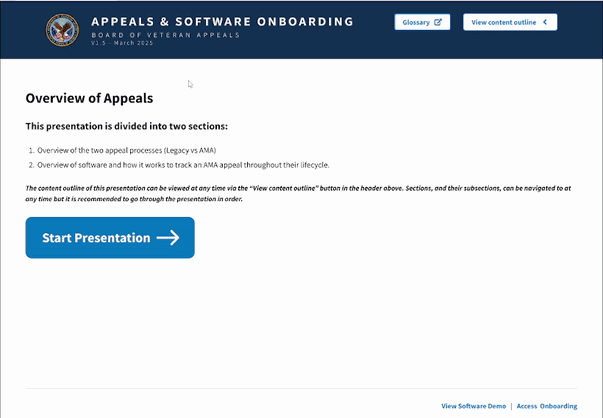

Overview
Problem
New hires in the project wait about 3 months or so just to have access to the *proprietary software they'll be working with in the duration of the project contract. While this is required due to PII and security concerns for the production environment, these concerns do not affect the demo environment of this software and delay the onboarding process when it comes to allowing the new hire to familarize themselves with the higher-level concepts of the software as well as the design system of the software.
Challenges faced
- Working around the limitations of Figma (a lack of scrolling prototypes as well as no save states) while still trying to make the guide as intuitive as possible
- Sharp learning curve for using Microsoft PowerApps, given that this was my first time using it.
Timeline
March 2024-March 2025
Role
0-1 Ownership. I researched, designed, and developed this project into production.
Solution breakdown
Create a onboarding learning guide that incorporates the following elements:
- An overview of the appeals process in the Department of Veterans' Affairs (Information available to the public)
- A high-level overview of an appeal's lifecycle in the proprietary software, presented in a logical, realistic flow
- A glossary of common terms used in the appeals process and the software
The main chunk of this project was set up using Figma and the flow was divided into two parts:
The first part would slowly introduce the Appeals landscape to the user, bringing in common terms and processes found on the public website of the VA. Links to the website for a more detailed overview were also included. Familar colors (typical of the VA brand) and components were used in the guide to further establish connection with a VA product.




Check out other projects:

Booz Allen Case Studies
Ongoing enhancement of a proprietary case management software to improve the Appeals process for U.S Veterans